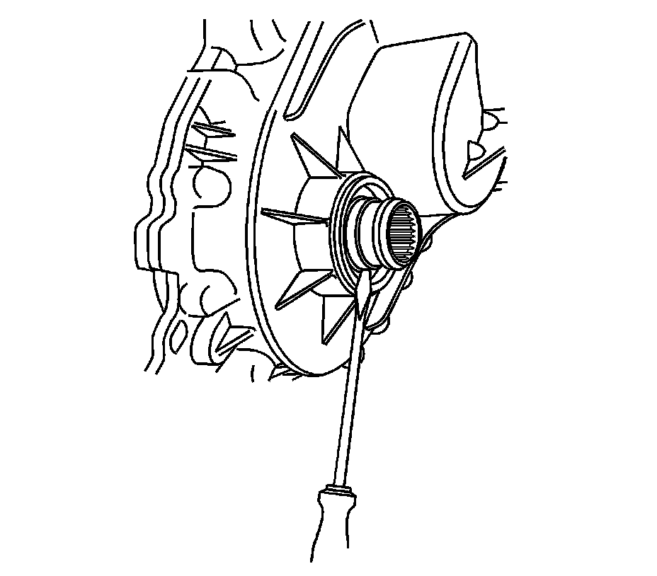
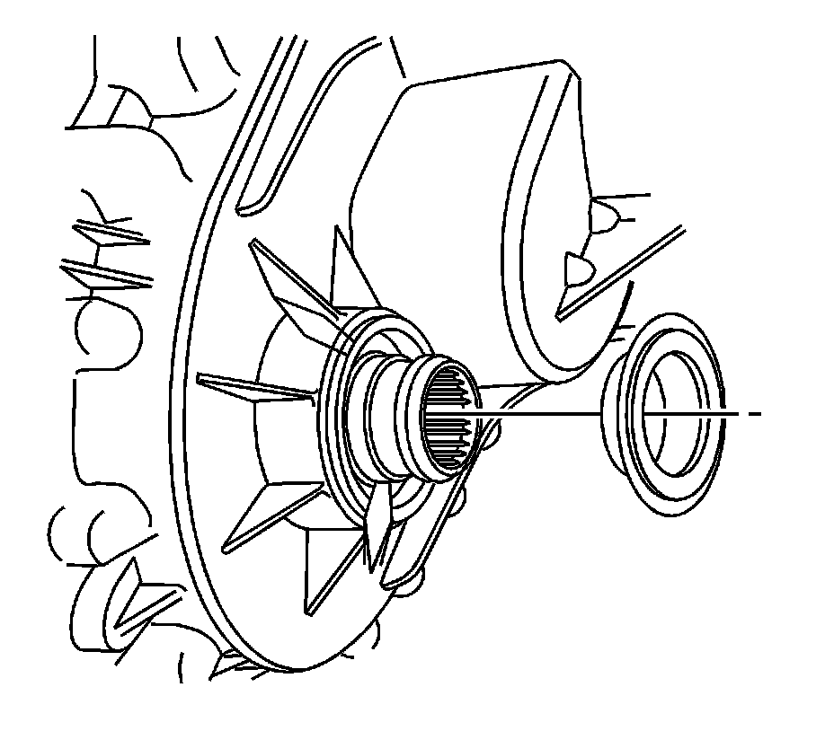
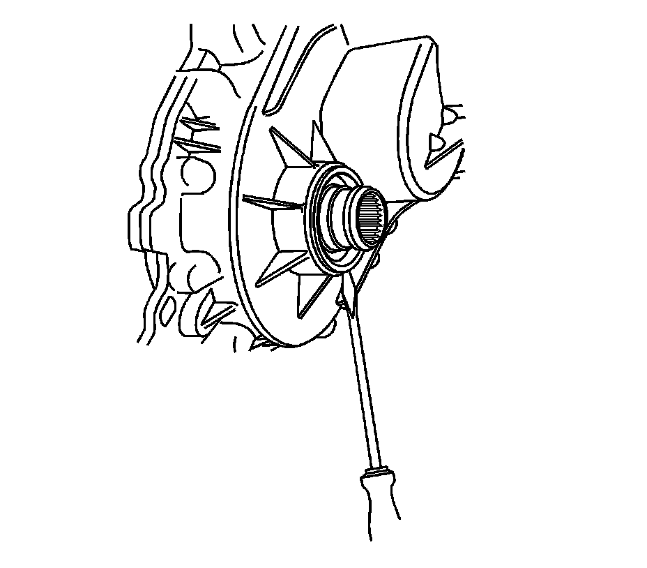
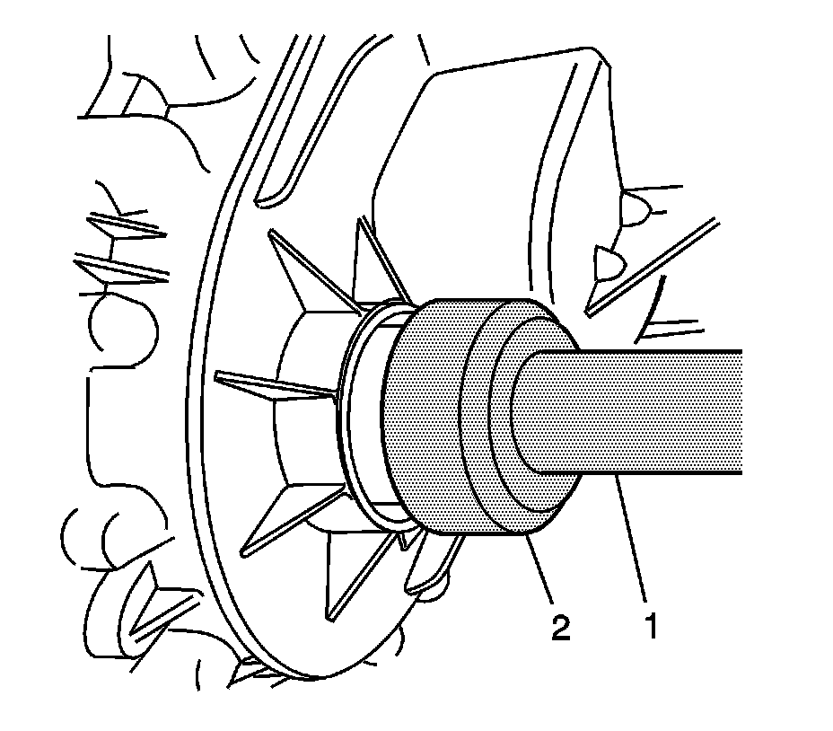

Transfer Case Output Shaft Seal Replacement - Front
Transfer Case Output Shaft Seal Replacement - Front
Tools Required
^ J 8092 Driver Handle
^ J 43484 Output Shaft Seal Installer
Removal Procedure

1. Raise and suitably support the vehicle. Refer to Lifting and Jacking the Vehicle.
2. Remove the transfer case shield, if equipped.
3. Remove the front propeller shaft.
Important: The front output shaft seal is a two piece internal seal. The inner seal race is a force fit on the front output shaft.
4. Remove the front output shaft seal by inserting a flat-tipped screwdriver behind the inner race of the seal.
5. Pry the inner seal race forward.

6. Using a small pry bar, move the inner seal race forward on the front output shaft.
7. Remove the inner seal race from the front output shaft.

8. Insert a flat-tipped screwdriver or small pry bar into the space between the lip of the outer race of the seal and the transfer case.
9. Remove the remaining part of the output shaft seal from the transfer case.
Installation Procedure

1. Install the J 43484 (2) to the J 8092 (1).
2. Install a NEW seal onto J 43484.
3. Using J 43484 (2), and J 8092 (1), install the seal.
4. Install the front propeller shaft.
5. Check the fluid level. Add fluid, if necessary.
6. Install the transfer case shield, if equipped.
7. Lower the vehicle.